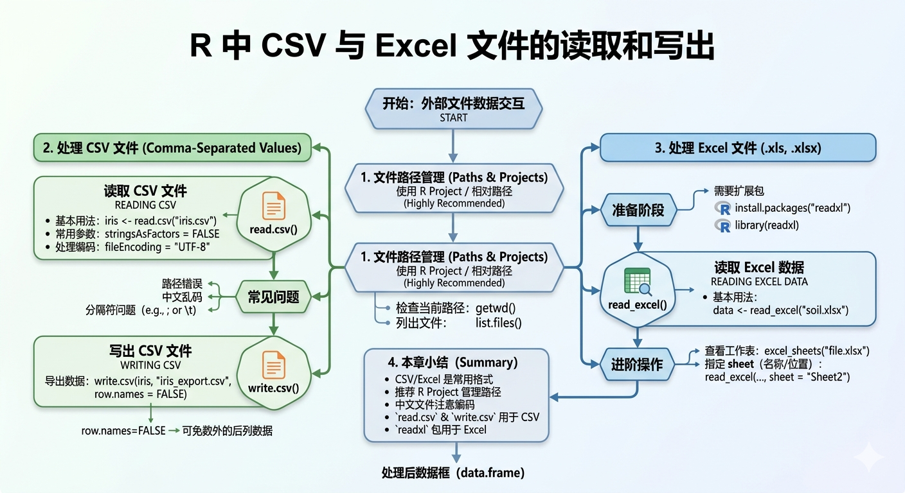

7 R 中 CSV 与 Excel 文件的读取和写出
7.1 本章学习目标
完成本章后，你将能够：
- 理解 CSV 与 Excel 文件的基本特点
- 掌握 CSV 文件的读取与写出方法
- 掌握 Excel 文件在 R 中的读取方法
- 能够处理文件读取中的常见问题
7.2 第一部分：CSV 文件的读取与写出
7.2.1 什么是 CSV 文件
CSV 是 Comma-Separated Values 的缩写，表示“逗号分隔值”文件。
它是一种最常见的文本数据格式，特点包括：
- 文件体积较小
- 跨平台兼容性强
- 可以被 Excel、R、Python 等多种软件读取
- 本质上是一个纯文本文件
在数据分析中，CSV 是最基础、最常见的数据交换格式之一。
7.2.2 为什么学习 CSV 文件
在 R 中，CSV 文件非常重要，因为：
- 很多原始数据会以 CSV 形式保存
- Excel 数据常常会先导出为 CSV 再导入 R
- CSV 文件便于共享与复现
- 大多数数据分析项目都会接触 CSV 文件
7.2.3 使用绝对路径
你的文件放在某个文件夹下，可以使用CTRL + SHIFT +H 快捷键到指定目录（文件夹）地址：
查看当前工作路径：
getwd()查看当前目录中的文件：
list.files()iris_data <- read.csv("iris.csv")7.2.4 CSV 文件的读取
在 R 中，最常用的读取函数是 read.csv(), read.csv()是 R 语言中用于读取 CSV 文件的基础函数，该函数将逗号分隔的文本数据转换为数据框对象，默认参数设置中 header = TRUE 表示首行作为列名，sep = “,” 指定分隔符为逗号，stringsAsFactors = FALSE 避免自动将字符串转换为因子类型，典型用法如 df <- read.csv(“data.csv”, na.strings = “NA”) 可通过 na.strings 参数指定缺失值标识符，该函数支持本地文件路径或网络 URL 作为数据源，是数据导入最常用的基础方法之一。
示例：
iris_data <- read.csv("iris.csv")
head(iris_data)该函数会把 CSV 文件读入为一个 data.frame（数据框）。
查看数据类型：
class(iris_data)查看数据结构：
str(iris_data)7.2.5 读取 CSV 时的常用参数
保留字符串而不是自动转因子
data1 <- read.csv("iris.csv", stringsAsFactors = FALSE)指定文件编码
如果文件中有中文，可能需要指定编码,如👉下载土壤数据 ：
data2 <- read.csv("soil_data.csv", fileEncoding = "UTF-8")通常 CSV 文件第一行是变量名，因此一般使用默认的 header = TRUE。
7.2.6 CSV 文件写出
R 中可以使用 write.csv() 将数据导出为 CSV 文件。
例如，将 iris 数据写出到 指定(Ctrl + Shift + H) 文件夹：
write.csv(iris, "iris_export.csv", row.names = FALSE)参数说明：
- 第一个参数：要导出的数据对象
- 第二个参数：输出文件路径
row.names = FALSE：不导出行名
如果不加 row.names = FALSE，导出的文件会多出一列行号。
7.2.7 CSV 文件操作常见问题
- 路径错误
如果写成：
read.csv("iris.csv")但文件并不在当前工作目录中，就会报错。
解决方法：
- 检查当前工作路径
- 检查文件是否确实存在
- 推荐使用 Project 和相对路径
- 中文乱码
如果 CSV 中有中文，读入后可能乱码。
解决方法：
- 尝试指定
fileEncoding = "UTF-8"
- 或尝试
fileEncoding = "GBK"
- 分隔符问题
有些文本文件不是逗号分隔，而是分号或制表符分隔。
这时 read.csv() 可能不适用，需要改用其他函数，例如：
read.table("example.txt", sep = "\t", header = TRUE)7.2.8 小结：CSV 文件部分
read.csv()用于读取 CSV 文件
write.csv()用于导出 CSV 文件
- 推荐使用 Project 和相对路径
- 中文文件要注意编码问题
- CSV 是 R 数据导入导出的基础格式
7.3 第二部分：Excel 文件的读取
7.3.1 为什么要学习 Excel 文件读取
虽然 CSV 很常见，但很多原始数据最初是保存在 Excel 文件中的，例如：
- 实验记录表
- 调查数据表
- 监测数据表
- 学生成绩表
因此，在 R 中直接读取 Excel 文件也非常重要。
7.3.2 Excel 文件的特点
Excel 文件常见扩展名为：
.xls.xlsx
与 CSV 不同的是，Excel 文件：
- 可以包含多个工作表（sheet）
- 可以有格式、颜色、公式等内容
- 不是纯文本文件
因此，R 读取 Excel 需要额外的扩展包。
7.3.3 读取 Excel 文件常用包
最常用的包是 readxl。
安装包：
#| eval: false
install.packages("readxl")加载包：
library(readxl)7.3.4 读取 Excel 文件
假设有一个文件：
soil_data.xlsx读取方式：
library(readxl)
excel_data <- read_excel("soil_data.xlsx")
head(excel_data)7.3.5 查看 Excel 文件中的工作表
如果一个 Excel 文件中有多个 sheet，可以先查看 sheet 名称：
excel_sheets("soil_data.xlsx")7.3.6 指定读取某个工作表
可以按名称读取：
sheet1_data <- read_excel("soil_data.xlsx", sheet = "Sheet1")也可以按位置读取：
sheet2_data <- read_excel("soil_data.xlsx", sheet = 2)7.3.7 Excel 读取后的数据类型
read_excel() 读取后的结果通常也是一个数据框（更准确地说是 tibble）。
例如：
class(excel_data)查看结构：
str(excel_data)7.3.8 CSV 与 Excel 的比较
| 文件类型 | 优点 | 适用场景 |
|---|---|---|
| CSV | 简单、通用、兼容性强 | 数据交换、批量处理 |
| Excel | 支持多工作表、便于人工整理 | 原始记录、实验表格 |
在实际数据分析中：
- 数据整理阶段常使用 Excel
- 数据分析阶段常导出为 CSV 或直接读 Excel
7.4 本章小结
CSV 是最常见的数据交换格式
read.csv()用于读取 CSV 文件
write.csv()用于导出 CSV 文件
Excel 文件需要使用
readxl包读取
read_excel()可以读取.xls和.xlsx文件
推荐使用 Project 和相对路径管理数据文件
文件读取中最常见的问题是路径错误与编码问题

图7.1文件读取总结
7.5 课堂练习
- 将
iris数据导出为 CSV 文件
- 使用
read.csv()将该 CSV 文件重新读入
- 读取一个 Excel 文件，并查看其中有哪些工作表
- 尝试指定某一个 sheet 读入数据
- 比较
read.csv()与read_excel()读入数据后的结构差异